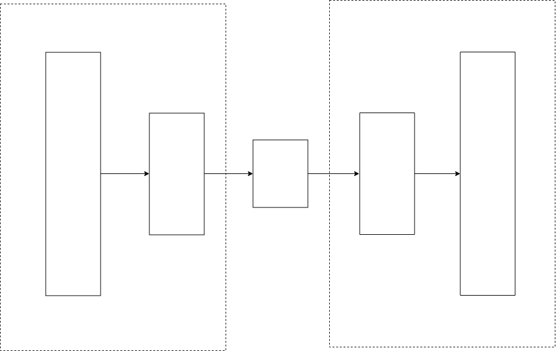
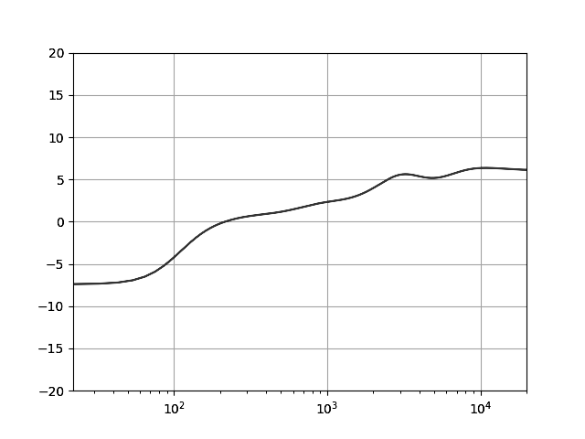
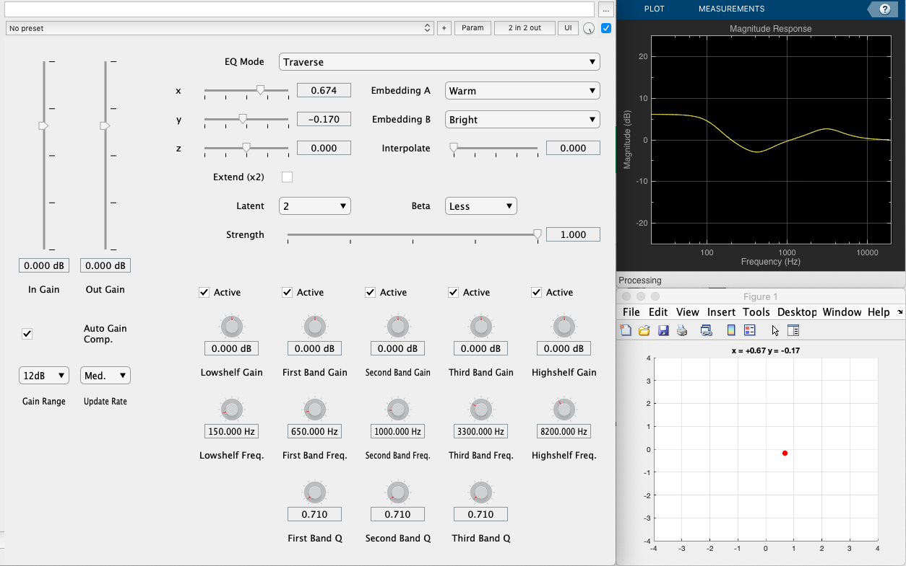
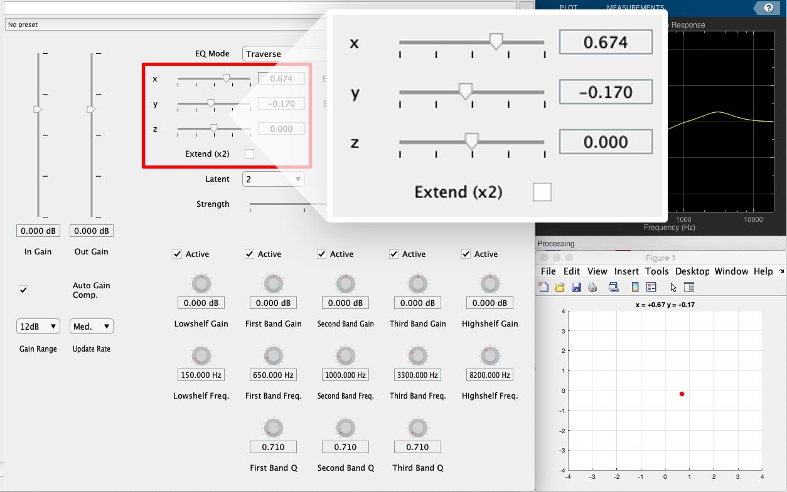
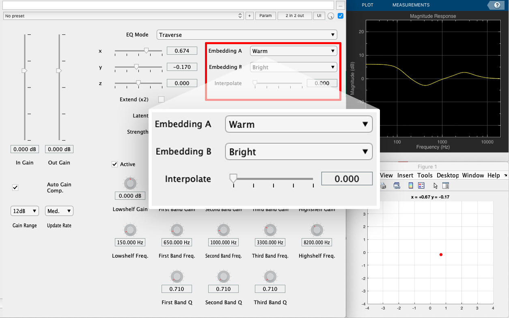
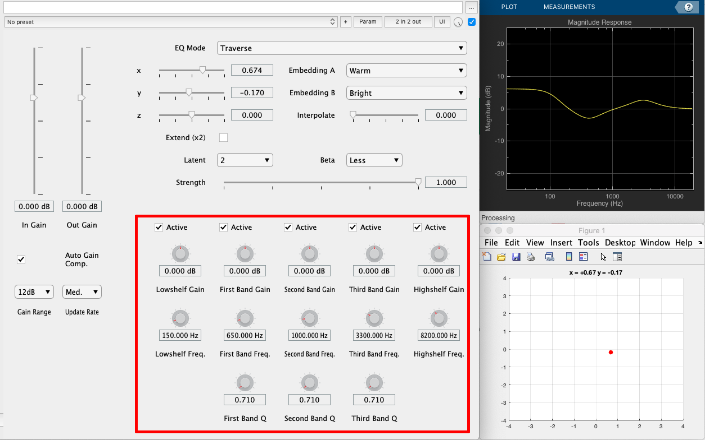
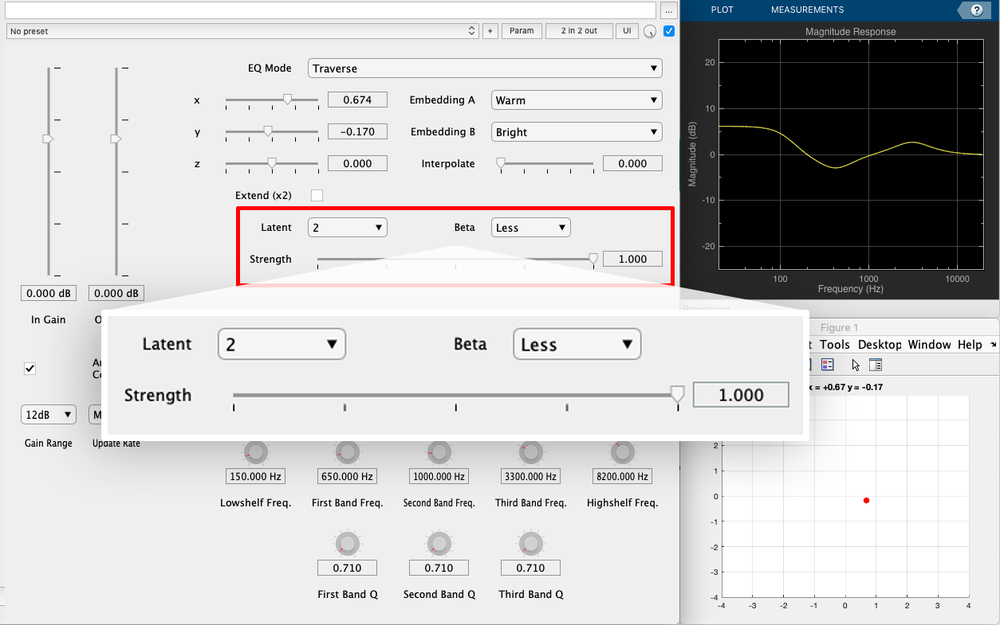
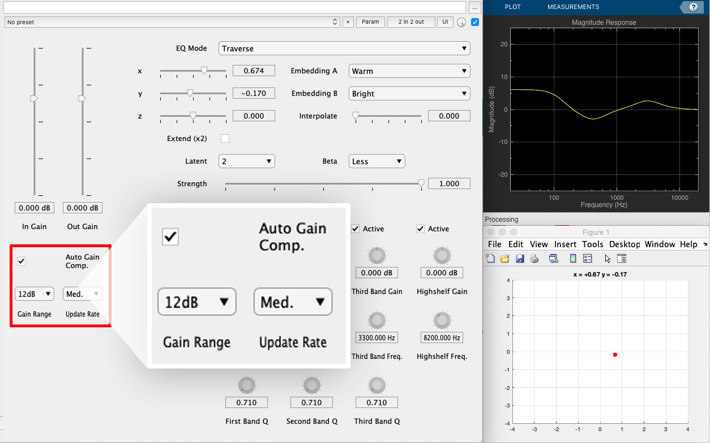
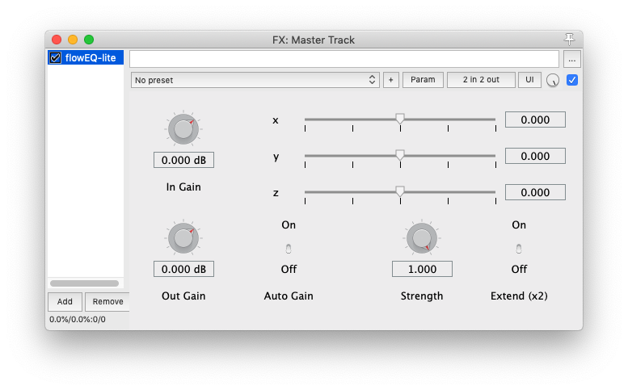

flowEQ
A new way to navigate equalization
October 17th, 2019 - 147th AES Convention - New York, New York, USA
Christian Steinmetz
Music Technology Group, Universitat Pompeu Fabra, Barcelona, Spain

Christian Steinmetz
MSc Student in the MTG at UPF
christianjames.steinmetz01@estudiant.upf.edu
www.christiansteinmetz.com
@csteinmetz1
What is flowEQ?

Using machine learning for simplified control of parametric EQ
Equalization

Analog parametric equalizer

Digital parametric equalizer plugin
Gain |
 |
Frequency |
 |
Q (bandwidth) |
 |
What we recorded...
What we want...
How do we set the EQ to get there?
The parameters to achieve this are non-obvious
(except to the well trained audio engineer)

Theory
Autoencoder
Encoder
Input -> EQ parameters
Decoder
Output -> EQ parameters
Latent space
Select a point
Each point decodes to EQ config
Variational autoencoder
The encoder becomes probabilistic and generates μ and σ
centers latent codes around origin
similar samples placed together
dense population of latent space
Auto-Encoding Variational Bayes
Diederik P. Kingma and Max Welling, 2013.
Disentanglement
Loss function
$$ \Large \mathcal{L}_{\beta-VAE}(\pmb{\theta},\pmb{\phi},\mathbf{x}^{(i)}) = - \mathbb{E}_{\mathbf{z} \sim q_{\theta}(\mathbf{z}|\mathbf{x}^{(i)})} [ {\log{p_\phi(\mathbf{x}^{(i)} | \mathbf{z})}} ] + \mathbf{\beta} \: D_{KL} (q_\theta(\mathbf{z} | \mathbf{x}^{(i)}) || p_\theta(\mathbf{z})) $$The beta term weighs the KL loss against the reconstruction loss
Larger beta means greater disentanglement
β-VAE: Learning Basic Visual Concepts with a Constrained Variational Framework
Irina Higgins, Loic Matthey, Arka Pal, Christopher Burgess, Xavier Glorot, Matthew Botvinick, Shakir Mohamed, and Alexander Lerchner, 2017.
Model
Model architecture
VAE architecture
Purposefully simple design
Fast inference time for seamless real-time use
Straightforward matrix operations in MATLAB code
Low data dimensionality doesn't require large network
Size
| Latent | 1 | 2 | 3 |
|---|---|---|---|
| Parameters | 31,759 | 34,833 | 37,707 |
Forward pass through decoder is about 300 μs seconds on CPU
Dataset

SAFE-DB dataset for five-band parametric EQ
~1700 examples
SAFE: A system for the extraction and retrieval of semantic audio descriptors
Ryan Stables, Sean Enderby. Brecht De Man, Gyorgy Fazekas, and Joshua Reiss, 2014.
Training
Twelve different models with different latent sizes and values of β
We use Keras and save the model weights for each model as HDF5
Adam optimizer with learning rate of 0.001
Each model is trained for 200 epochs
Entire training process takes about 2 hours on CPU
| Model | 1 | 2 | 3 | 4 | 5 | 6 | 7 | 8 | 9 | 10 | 11 | 12 |
|---|---|---|---|---|---|---|---|---|---|---|---|---|
| Latent | 1D | 1D | 1D | 1D | 2D | 2D | 2D | 2D | 3D | 3D | 3D | 3D |
| β | 0.000 | 0.001 | 0.01 | 0.02 | 0.000 | 0.001 | 0.01 | 0.02 | 0.000 | 0.001 | 0.01 | 0.02 |
Latent space disentanglement

β = 0.0

β = 0.02
Bright
Warm
Plugin
Overview
- We use the MATLAB Audio Toolbox to deploy the plugin
- 3 main modes of operation: Traverse, Semantic, and Manual
- User can select among 12 models (varying Latent and β)
Machine learning models in Audio Toolbox
- Save model weights from training in Keras as HDF5 files
- We use a custom MATLAB function to convert these to MAT files
- Implement the model architecture in pure MATLAB code
- UI controls swap the weights of the network used for inference
- Connect output (EQ parameters) to 5-band parametric EQ implemented in MATLAB
Full plugin interface
Latent space traversal
Semantic controls
Fully manual controls
Model control
Automatic gain compensation
flowEQ-lite
Features an extremely simple interface
Anatomy of the plugin

Demo
Future directions
Adaptive latent space conditioned on streaming audio content
Collect additional data to expand the model's knowledge
Employ other generative modeling techniques (i.e. Normalizing flows)
Extend this to an entire mixing console (...but we need the data...)